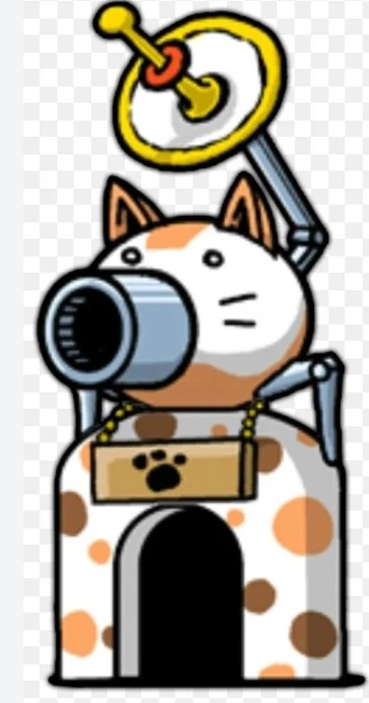
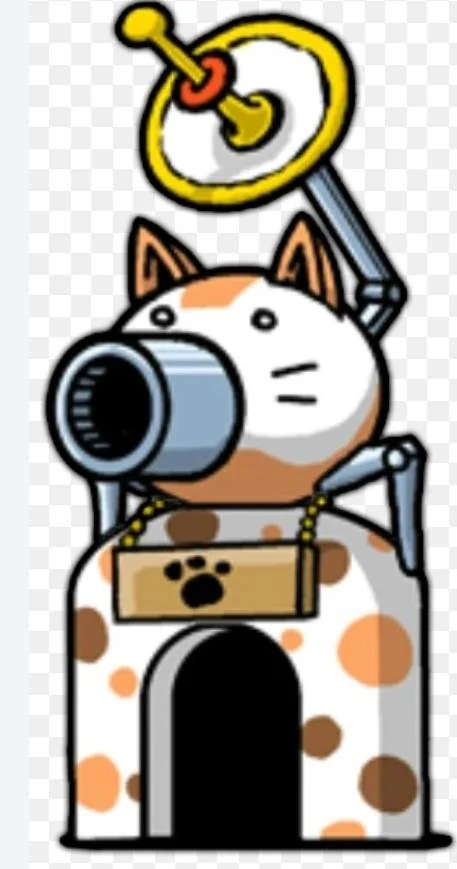
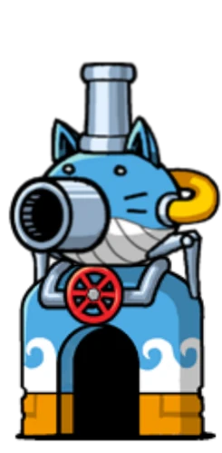
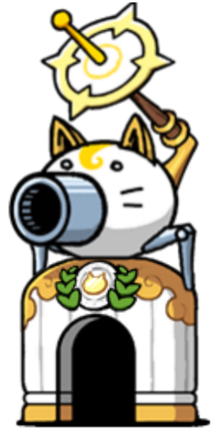
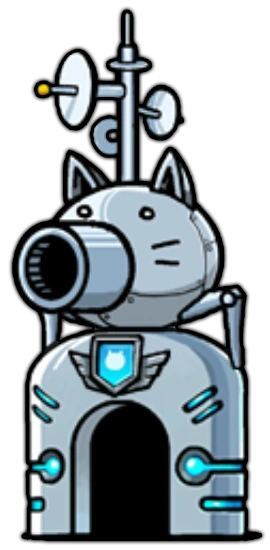
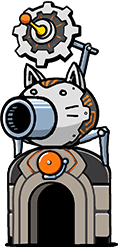
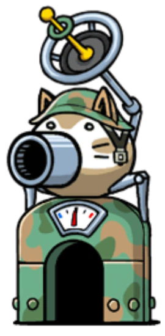

CANNON NORMAL
Disparo básico de energía que recorre todo el campo de batalla.
Daño medio Disparo básico de energía que recorre todo el campo de batalla.
Daño medio Hace daño extra a los enemigos metálicos.
Daño extra a Metálicos Hace daño masivo a enemigos zombies y los hace salir de la tierra.
Daño Masivo + Daño en línea Escudo temporal para tus gatos que frena a los enemigos.
Defensa Maldice a enemigos quitandoles habilidades extras que tengan.
Maldición Destruye escudos y empuja hacia atrás a los enemigos.
Rompe escudos 